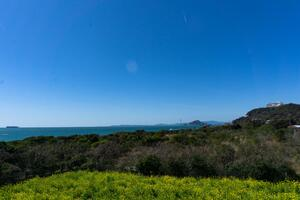

モーダル
透き通った海の上を渡る橋
命息づく緑の山々

見草原に広がる、果てなき青
戻る
タブ切り替え
- HOME
- NEWS
- MYPAGE
- このページでは、私が各地を巡って感じた風景や出会い、そして心に残った出来事を記録しています。 目的地も決めず、ただ惹かれる場所へ足を運び、見たもの・聞いたこと・感じたことを、言葉と写真で残していきます。 忘れたくない風景や、ふとした瞬間の想いを、自分なりのペースで綴っていく旅の記録帳です。 どうぞ気ままに読み進めていただければ嬉しいです。
- 新しい旅の記録を公開しました。今回は、山で過ごした静かな3日間の体験をまとめています。 写真や気づき、ちょっとした失敗談まで、現地でしか味わえなかった出来事を綴っています。 これからも、旅を通して感じたことを少しずつ書き残していきますので、よろしければご覧ください。
- 初めまして。都市の喧騒から少し離れ、自分のペースで旅を続けている者です。 「なぜ旅に出るのか」と聞かれることがありますが、明確な答えはまだ見つかっていません。 ただ、知らない土地に立ったときの胸の高鳴りや、現地で出会った人との何気ない会話が、 少しずつ、自分という存在を形づくってくれている気がします。 このページでは、そんな日々の記録をゆるやかに綴っています。
アコーディオン
風を渡る橋の上で
透明度の高い海の上に、まっすぐ伸びる一本の橋。
足元を覗き込むと、海の底が見えるほど透き通っていて、空と水面の境界が曖昧になる感覚に包まれました。
海風は強く、潮の香りが服にも髪にも染み込み、まるで自分が海の一部になったような心地よさでした。
渡り終えたあとも、振り返って何度もその景色を確かめてしまう。そんな場所でした。
深緑の奥へ
見渡す限り、深い緑が折り重なるように連なる山々。
道中には小さな沢がいくつも現れ、苔むした岩を水がなめらかに流れていく様子が印象的でした。
山の静けさの中では、心の中のざわつきもすっと消えて、ただ風と木々の音に耳を傾けている自分がいました。
頂上に立ったときの達成感よりも、そこに至るまでのすべての瞬間が、愛おしく思える山旅でした。
空を仰ぐ草原にて
一面の草原の上に、どこまでも広がる青い空。
雲ひとつないその空は、地平線の先まで澄み渡っていて、思わず立ち止まって見上げてしまいました。
静かな風が吹き抜けるたびに、草がさわさわと揺れ、小さな虫たちの声が遠くで響いていました。
何もない、けれど、何もいらない。そんな不思議な充足感に包まれた時間でした。